Mecanização agrícola:
Máquinas para o preparo do solo
Gustavo Frosi
Instituto Federal do Paraná
Curso Superior em Engenharia Agronômica
9 de outubro de 2026
Desempenho operacional da maquinaria agrícola
Desempenho operacional da maquinaria agrícola
Estudo analítico das operações, a fim de determinar “o que fazer” e “quando fazer”, por meio da análise operacional.
Para obter uma mecanização “racional”, deve-se seguir três planos.
- Inicialmente, definimos a operação (o que fazer);
- Depois, escolhemos os métodos e as máquinas (como fazer);
- Por fim, temos a execução da operação (fazer).
Desempenho operacional da maquinaria agrícola
O desempenho operacional é definido como um complexo de informações para definir quali-quantitativamente os atributos da maquinaria agrícola quando executa operações sob determinadas condições de trabalho.
- Características operacionais: abrangem dados relativos à qualidade e à quantidade de trabalho desenvolvido pela maquinaria, sob determinadas condições de trabalho;
- Características dinâmicas: abrangem dados de potência requerida para acionamento e de velocidade de trabalho da maquinaria, sob determinadas condições de trabalho;
- Características de manejo: relacionadas às regulagens, à manutenção, às reparações e à estabilidade.
Terminologias para a análise de sistemas mecanizados
Terminologias para a análise de sistemas mecanizados
- Tempo de campo;
- É o tempo que a máquina utiliza no campo, desde o início da atividade funcional até o término dela.
- Tempo teórico por unidade de área;
- É o tempo que seria requerido trabalhando-se na capacidade de campo teórica;
- Tempo operacional efetivo;
- É o tempo durante o qual a máquina está realmente desempenhando a função para a qual foi projetada. É maior que o tempo teórico de campo se a largura total útil da máquina não for utilizada.
Terminologias para a análise de sistemas mecanizados
- Tempo total de campo;
- É a soma do tempo operacional efetivo com os tempos perdidos;
- Tempos perdidos;
- Podem advir de obstruções no campo (embuchamento), abastecimento (combustível e insumos), descarga de produto, manutenção e manobras (o deslocamento de ida e volta ao campo, a manutenção preventiva e a verificação diária não são contabilizados);
- Tempos perdidos por confiabilidade das máquinas: probabilidade estatística de que um equipamento desempenhe bem sua função por um período de tempo (relacionado com quebras).
Terminologias para a análise de sistemas mecanizados
- Capacidade de campo;
- Efetiva (Ce): é a razão entre o desempenho atual (área) em um tempo dado;
- \(Ce=\frac{área~(ha)}{tempo~(h)}\);
- Teórica (Ct): é a razão de desempenho obtida se a máquina trabalhar 100% do tempo na velocidade nominal, utilizando 100% de sua largura nominal;
- \(Ct=largura~(m)*velocidade~(m/h)\)
- Efetiva (Ce): é a razão entre o desempenho atual (área) em um tempo dado;
Terminologias para a análise de sistemas mecanizados
Eficiência de campo: é a razão entre a capacidade de campo efetiva e a capacidade de campo teórica.
\[Efc=\frac{Ce}{Ct}=\frac{Te}{Tc}\]
onde,
- \(Te\) Tempo efetivo (gasto na operação de fato);
- \(Tc\) Tempo total no campo (contando as perdas).
Terminologias para a análise de sistemas mecanizados
Eficiência de tempo: é a razão entre o tempo efetivo e o tempo total de campo.
\[Eft=\frac{Te}{Tc}\]
onde,
- \(Te\) Tempo efetivo por unidade de área;
- \(Tc\) Tempo total de campo;
Terminologias para a análise de sistemas mecanizados
O tempo total de campo pode ser descrito como:
\[Tc=Te+Tpn+Tpp\]
- \(Tpn\) Tempo perdido não proporcional à área;
- \(Tpp\) Tempo perdido proporcional à área;
- \(Te\) Tempo efetivo por unidade de área;
- \(Tc\) Tempo total de campo;
Terminologias para a análise de sistemas mecanizados
- Velocidade de trabalho: é a razão média de deslocamento de uma máquina no campo durante um período ininterrupto de atividade funcional;
- Fator de carga: é a razão entre a potência utilizada na execução de uma operação no campo e a potência líquida disponível no motor;
- Largura de trabalho;
- Efetiva é a largura com a qual a máquina efetivamente opera;
- Teórica é a largura obtida com a medida da parte operacional da máquina;
Desempenho
A determinação das eficiências de campo das máquinas envolve o estudo dos tempos e movimentos em cada situação de trabalho da máquina de interesse.
Uma das formas é determinar as eficiências de campo levantando esses dados por alguns dias.
Exemplo
Dados de ensaio de uma colhedora de arroz, com os seguintes valores:
- Área trabalhada: 0,37 ha;
- Largura de trabalho: 3,64 m;
- Tempo efetivo de colheita: 21,76 min;
- Tempo de manobras: 5,89 min;
- Velocidade: 2,8 km/h;
- Tempo de descarregamento: 4,42 min;
- Tempo total de campo: Te + Tp;
Encontre:
- Capacidade de campo teórica;
- Capacidade de campo efetiva;
- Eficiência de campo;
- Eficiência de campo por tempo;
- Capacidade de manipulação;
Eficiência de campo em operações
| Equipamento | Velocidade (km h⁻¹) | EC (%) |
|---|---|---|
| Arados | 4–8 | 70–85 |
| Grades pesadas | 5–7 | 70–90 |
| Grades niveladoras | 7–9 | 70–90 |
| Escarificadores | 5–8 | 70–85 |
| Subsoladores | 4–7 | 70–90 |
| Enxadas rotativas | 2–7 | 70–90 |
| Semeadoras de sementes miúdas | 4–8 | 65–80 |
| Semeadoras de sementes graúdas (precisão) | ||
| Plantio direto | 3–7 | 50–75 |
| Plantio convencional | 4–8 | 50–75 |
| Cultivadores | 3–5 | 70–90 |
| Pulverizadores | 5–8 | 60–75 |
| Colhedora de arrasto | 3–6 | 60–75 |
| Colhedora combinada automotriz | 3–6 | 65–80 |
| Colhedora de forragem | 4–7 | 50–75 |
| Ceifadoras | 6–9 | 75–85 |
Exercício 1 - Colhedora de soja
- Área trabalhada: 0,78 ha;
- Largura de trabalho: 5,0 m;
- Velocidade: 4,0 km/h;
- Tempo efetivo de colheita: 24 min;
- Tempo de manobras: 6 min;
- Tempo de descarregamento: 5 min;
- Produtividade da lavoura: 3.600 kg/ha;
- Tempo total de campo: Te + Tp;
Encontre:
- Capacidade de campo teórica;
- Capacidade de campo efetiva;
- Eficiência de campo;
- Eficiência de campo por tempo;
- Capacidade de manipulação (t/h);
Exercício 2 - Semeadora
- Área semeada: 2,40 ha;
- Largura de trabalho: 4,5 m;
- Velocidade: 5,5 km/h;
- Tempo efetivo de semeadura: 58 min;
- Tempo de manobras: 14 min;
- Tempo de abastecimento: 12 min;
- Dose de sementes: 60 kg/ha;
Encontre:
- Capacidade de campo teórica;
- Capacidade de campo efetiva;
- Eficiência de campo;
- Eficiência de campo por tempo;
- Capacidade de manipulação (kg/h de sementes);
Exercício 3 - Pulverizador autopropelido
- Área pulverizada: 12,0 ha;
- Largura da barra: 18 m;
- Velocidade: 7 km/h;
- Tempo efetivo de aplicação: 60 min;
- Tempo de manobras: 8 min;
- Tempo de reabastecimento do tanque: 20 min;
- Taxa de aplicação: 100 L/ha;
Encontre:
- Capacidade de campo teórica;
- Capacidade de campo efetiva;
- Eficiência de campo;
- Eficiência de campo por tempo;
- Capacidade de manipulação (L/h de calda);
Exercício 4 - Colheita de milho
Uma colhedora de milho tem capacidade de campo teórica de 3,0 ha/h e eficiência de campo de 70%. A produtividade esperada é de 12.000 kg/ha e a área total a ser colhida é de 45 ha.
Encontre:
- Capacidade de campo efetiva;
- Capacidade de manipulação (t/h);
- Tempo total necessário para colher a área;
- Quantos dias de 8 h de trabalho serão necessários;
Máquinas para preparo do solo
Máquinas para preparo do solo
Quando as condições naturais são adequadas, não é preciso intervir no solo para assegurar o desenvolvimento saudável das plantas. Isso justifica por que, na ausência de interferência humana, várias espécies de plantas conseguem prosperar em equilíbrio biológico na natureza.
Por outro lado, na ausência dessas condições, o preparo do solo torna-se uma operação fundamental na agricultura, abrangendo uma variedade de métodos e gerando diferentes perspectivas.
Máquinas para preparo do solo
O que é o preparo do solo?
Engloba uma série de atividades que envolvem a movimentação do solo, com o objetivo de estabelecer condições propícias para o desenvolvimento das culturas.
Trata-se da manipulação mecânica do solo por meio da ação dos órgãos ativos das máquinas e dos implementos agrícolas.
Máquinas para preparo do solo
Origem e história
O preparo do solo surgiu quando o homem deixou de depender exclusivamente da caça, da pesca e da coleta e passou a cultivar o solo.
Os registros históricos indicam que o preparo do solo teve início por volta de 2000 anos antes de Cristo, na região da Mesopotâmia.
Com o tempo, o homem começou a utilizar animais para tracionar hastes de madeira e, depois, de metal.
Em 1760, na Escócia, foi introduzido o arado com aivecas de metal, tornando-se, assim, um dos implementos mais antigos e amplamente utilizados no preparo do solo.
Máquinas para preparo do solo
Origem e história
Até os anos de 1960, a principal prática de preparo do solo era a aração, enquanto a gradagem tinha função secundária de destorroamento e nivelamento.
A partir de 1970, houve considerável redução no uso do arado, e a grade passou a assumir um papel crucial devido à sua maior capacidade operacional.
Máquinas para preparo do solo
Origem e história
Atualmente, o método predominante começa com o uso de grades médias ou pesadas para descompactar as primeiras camadas do solo e cortar o material vegetal. Em seguida, as grades leves são empregadas para destorroar e nivelar a superfície do solo.
Em casos de compactação profunda, pode ser realizada a subsolagem antes do nivelamento.
Máquinas para preparo do solo
Origem e história
A tendência tecnológica atual é adotar um manejo conservacionista, que visa reduzir a erosão hídrica e eólica dos solos, diminuir a emissão de gases do efeito estufa, bem como reduzir o uso de combustíveis fósseis. Tudo isso implica uma redução no uso de implementos para preparo do solo.
Esses implementos estão ficando restritos a condições específicas, em que há desequilíbrio.
Operações básicas
Operações básicas
A primeira consideração a ser feita para qualquer atividade de preparo do solo é a consistência na qual o solo se encontra. A água afeta a resistência relativa da massa do solo, dos torrões e o deslizamento dos órgãos ativos.
Operações:
- Rompimento;
- Compactação;
- Desintegração;
- Corte;
- Inversão;
- Mistura.
Operações básicas
Rompimento
O objetivo desta operação é reduzir a densidade do solo com o mínimo de esforço, por meio do processo de rompimento, quebra e abertura do solo, provocando o aumento da porosidade.
Pode reduzir a compactação de camadas mais profundas.
Em geral, isso pode ser conseguido realizando a operação com o solo próximo ao limite de contração ou sobre o limite superior de plasticidade, quando a resistência da massa do solo ao esforço de corte é mínima. Não se recomenda a operação quando o solo estiver muito úmido, pois ele pode fluir plasticamente através do órgão ativo, sem promover a desagregação.
Operações básicas
Compactação
É definida como um aumento da densidade do solo, resultado do rearranjo das partículas e da consequente redução da porosidade por onde há circulação de água e ar.
É alcançada tanto em solos de consistência friável, próximo do limite de contração, quanto em estado plástico, sobre o limite inferior de plasticidade (mais adequado). O estado líquido não propicia resultados positivos de compactação.
Operações básicas
Desintegração
O objetivo é reduzir o tamanho médio dos torrões.
É necessário provocar a ruptura nos torrões, o que é conseguido quando a resistência deles é menor do que a da massa do solo. Não é recomendada no solo em estado plástico. O melhor momento para a desintegração é quando o solo está em estado de consistência friável.
Operações básicas
Corte
Se a tensão de cisalhamento em um corpo de solo excede determinado valor crítico de resistência, o solo se rompe.
É realizado quando se busca cortar o solo. Pode ser utilizado para controle de plantas daninhas ou para cortar resíduos culturais. São utilizados discos ou lâminas a pouca profundidade, agindo paralelamente à superfície, em condições de solo friável.
Operações básicas
Inversão
Esta operação busca, fundamentalmente, enterrar a camada superficial do solo para controlar as plantas; por isso, é essencial que o solo seja totalmente invertido e não desintegrado.
Ocorre quando se trabalha com o solo em estado sólido. A melhor consistência para essa condição é a friável.
Operações básicas
Mistura
Consiste em misturar ou incorporar fertilizantes, resíduos vegetais ou extratos orgânicos superficiais ao solo. É executada quando o solo está em estado líquido e, de forma adequada, quando em estado friável.
Tipos de preparo do solo
Tipos de preparo do solo
O equipamento selecionado deve considerar alguns fatores.
- Condição inicial do solo;
- Condição em que deverá estar o solo após a operação;
- Profundidade de trabalho;
- Velocidade de operação;
- Custo da máquina ou do implemento.
Tipos de preparo do solo
Os tipos podem ser classificados em:
- Inicial;
- Periódico;
- Primário;
- Secundário;
Tipos de preparo do solo
Inicial
São as operações iniciais no solo para criar condições físicas e químicas que favoreçam o crescimento e o desenvolvimento das plantas, em áreas não utilizadas anteriormente com essa finalidade.
Exemplos:
- Remoção de vegetação;
- Destoca;
- Enleiramento e remoção de material enleirado;
- Regularização da superfície para torná-la trabalhável.
Tipos de preparo do solo
Periódico - primário
Engloba as operações mais profundas e robustas, tais como:
- Aração;
- Gradagem pesada;
- Escarificação.
O objetivo principal é descompactar o solo, revertendo danos causados à sua estrutura pelo tráfego de máquinas e pela ação da chuva, ao mesmo tempo em que se promove a incorporação de materiais vegetais.
Tipos de preparo do solo
Periódico - primário
Na aração, há o corte, a elevação e a inversão de uma camada de solo (prática em desuso).
Na gradagem pesada, há o uso de grades de discos com maiores dimensões (diâmetro e espaçamento dos discos), capazes de mobilizar o solo em profundidades semelhantes às executadas na aração (substitui o arado).
Já na escarificação, há a mobilização do solo até 30 cm de profundidade por meio de escarificadores. Realiza-se o rompimento da camada superficial sem inverter o solo. Deve-se ter cuidado em condições de alta cobertura vegetal (arraste de palhada).
Tipos de preparo do solo
Periódico - primário
Já a subsolagem é a operação destinada à descompactação do solo em camadas mais profundas, superiores a 30 cm, com o uso de equipamentos mais robustos.
Tipos de preparo do solo
Periódico - secundário
São as operações com o objetivo principal de nivelar e destorroar a camada superficial do solo, para criar condições propícias à implantação e ao desenvolvimento inicial das culturas.
As operações mais comuns para o preparo secundário incluem gradagens, enxadas rotativas e cultivadores de campo com rolos destorroadores/niveladores.
As grades de discos são as mais comuns devido à facilidade de manuseio, ajuste e manutenção. No entanto, do ponto de vista conservacionista, apresentam um desafio quanto ao nivelamento, que é ocasionado pelo destorroamento drástico da camada superficial (pulverização do solo).
Classificação de máquinas e implementos para preparo do solo
Classificação de máquinas e implementos para preparo do solo
Quanto à fonte de potência
Considera a fonte de energia que as traciona.
- Tração animal;
- Tração mecânica.
Classificação de máquinas e implementos para preparo do solo
Quanto ao acoplamento à fonte de potência
Considera a forma de engate entre fonte e implemento.
- Barra de tração;
- Sistema hidráulico de 3 pontos;
Classificação de máquinas e implementos para preparo do solo
Quanto ao acoplamento à fonte de potência: De arrasto
Acoplamento à fonte de potência por meio da barra de tração.
Tem como vantagem a facilidade no acoplamento para qualquer posição relativa entre o trator e o implemento.
Todas as forças passam por um único ponto de engate.
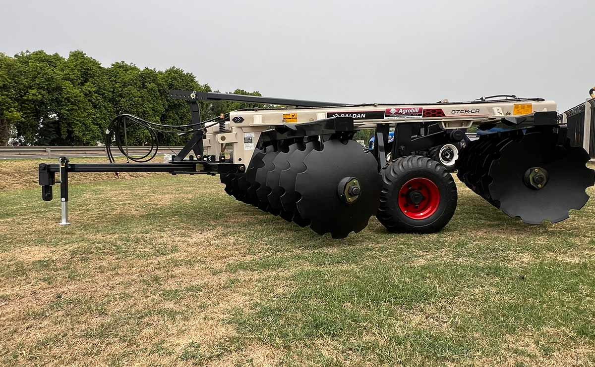
Classificação de máquinas e implementos para preparo do solo
Quanto ao acoplamento à fonte de potência: Semimontados
Acontece por meio dos dois braços inferiores do sistema hidráulico de 3 pontos, sendo a parte traseira do equipamento sustentada por duas ou mais rodas.
Possui como vantagem o controle de posição do implemento, especialmente em máquinas que necessitam de controle de profundidade.
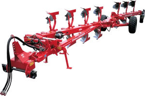
Classificação de máquinas e implementos para preparo do solo
Quanto ao acoplamento à fonte de potência: Montados
A ligação do implemento com a fonte de potência é feita pelo sistema hidráulico de 3 pontos.
O implemento se comporta como uma extensão do trator.
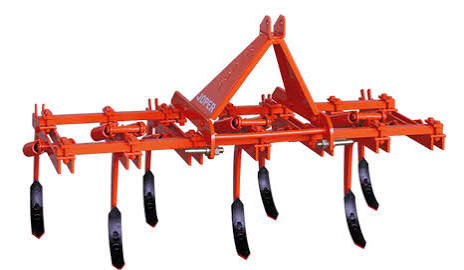
Máquinas e implementos para o preparo do solo
Máquinas e implementos para o preparo do solo
Arados
Embora o emprego e o uso tenham diminuído ao longo dos anos devido às técnicas conservacionistas, os arados são implementos agrícolas projetados para revolver e preparar o leito radicular, incorporar resíduos vegetais, remover camadas compactadas, entre outros.
O princípio de funcionamento compreende o corte de uma faixa de solo, denominada “leiva”, que é elevada e invertida.
Máquinas e implementos para o preparo do solo
Arados
Podem ser subdivididos em:
- Número de órgãos ativos;
- Monocorpo, bicorpo, tricorpo e multicorpo;
- Quanto à movimentação;
- Fixos e reversíveis;
- Quanto ao tipo de órgãos ativos;
- Aivecas e discos.
Máquinas e implementos para o preparo do solo
Arados de aiveca
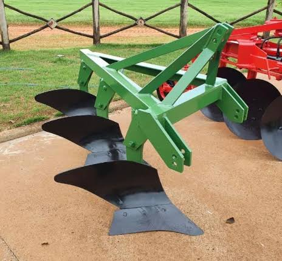
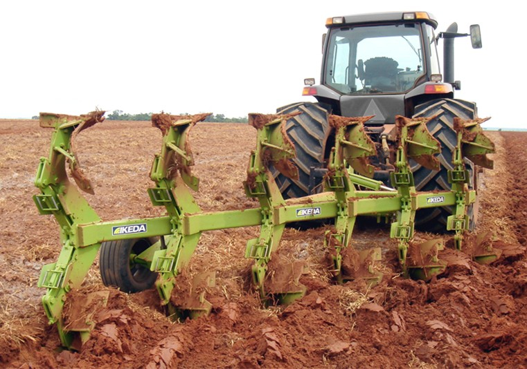
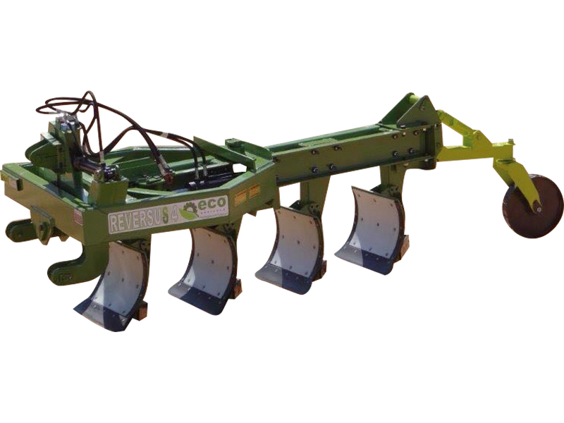
Máquinas e implementos para o preparo do solo
Arados de aiveca
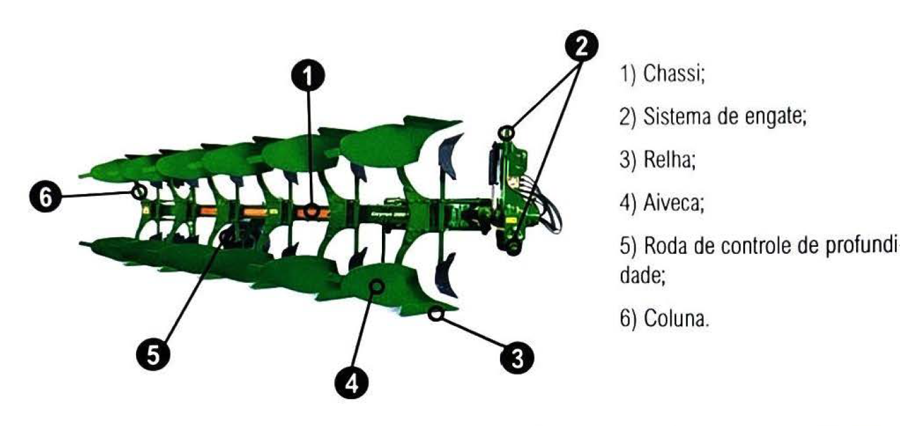
Máquinas e implementos para o preparo do solo
Arados de aiveca
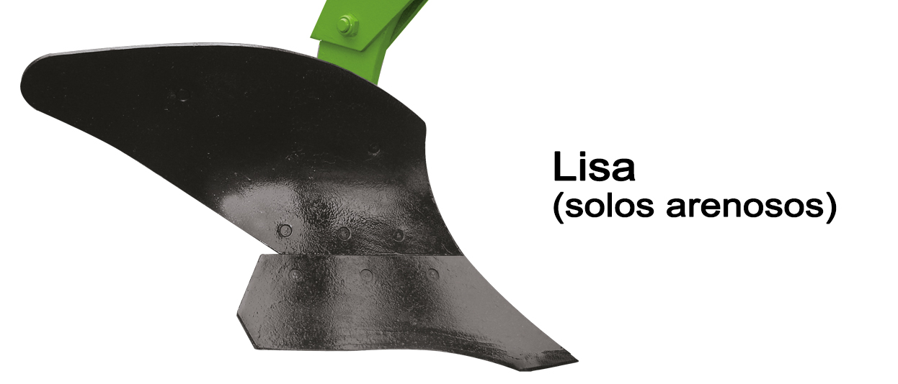
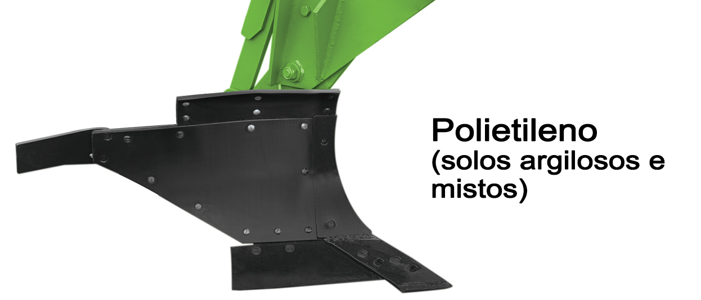
Máquinas e implementos para o preparo do solo
Arados de discos
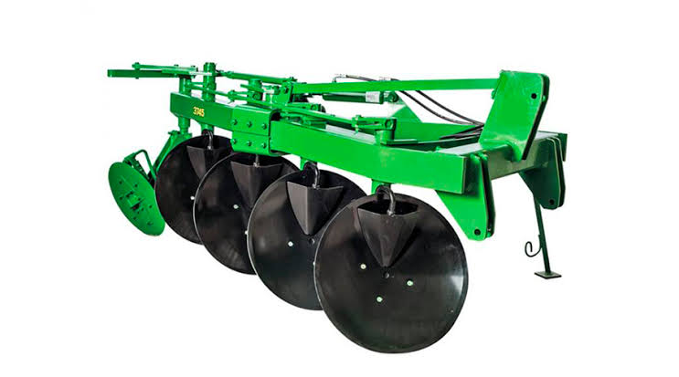
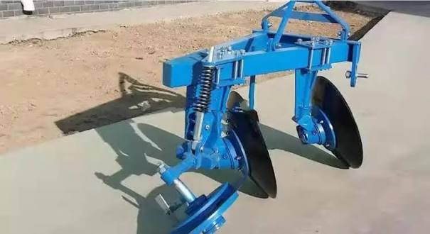
Máquinas e implementos para o preparo do solo
Arados de discos

Máquinas e implementos para o preparo do solo
Arados de discos
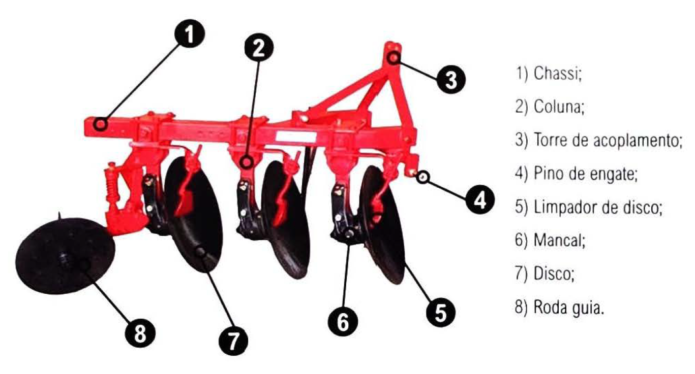
Máquinas e implementos para o preparo do solo
Grades agrícolas
Têm como objetivo principal o preparo secundário do solo, que envolve destorroamento e nivelamento após o preparo inicial.
Podem ser subdivididas em:
- Quanto ao tipo de órgão ativo;
- Quanto à ação no solo ou à disposição dos eixos;
- Quanto ao diâmetro dos discos e ao espaçamento entre discos.
Máquinas e implementos para o preparo do solo
Grades agrícolas: Grades de dentes
Pouco utilizadas no Brasil, o componente principal é uma ponta de aço (dente), de alta resistência à abrasão.
Eficientes em solos com pouco resíduo vegetal.
Podem ser subdivididas em:
- Dentes rígidos;
- Dentes flexíveis (molas);
- Oscilantes;
- Giratórios;
- Eixos rotativos.
Máquinas e implementos para o preparo do solo
Grades agrícolas: Grades de dentes
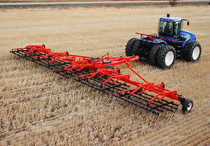
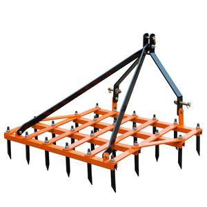
Máquinas e implementos para o preparo do solo
Grades agrícolas: Grades de discos
São responsáveis pela mobilização do solo por meio de calotas esféricas (discos).
Normalmente, os discos das grades são menores e apresentam profundidade média de penetração mais superficial, em torno de 1/6 do seu diâmetro, enquanto o disco do arado apresenta profundidade média de penetração de 1/3 do seu diâmetro.
Máquinas e implementos para o preparo do solo
Grades agrícolas: Grades de discos
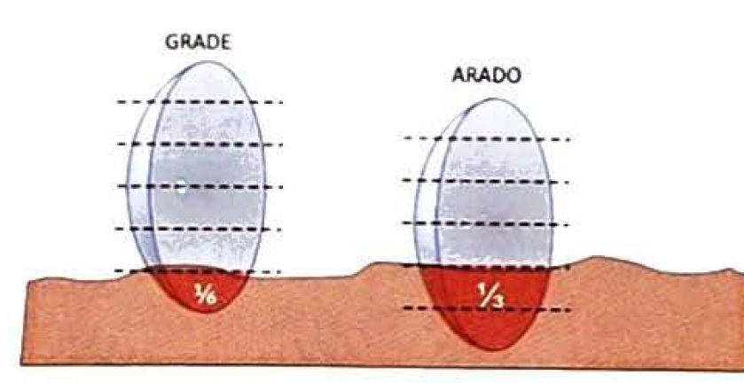
Máquinas e implementos para o preparo do solo
Grades agrícolas: Grades de discos
São melhores em relação às de dentes, pois possuem maior capacidade de picar e incorporar resíduos vegetais, apresentando bom trabalho tanto em solos leves quanto em solos pesados.
Máquinas e implementos para o preparo do solo
Grades agrícolas: Grades de discos
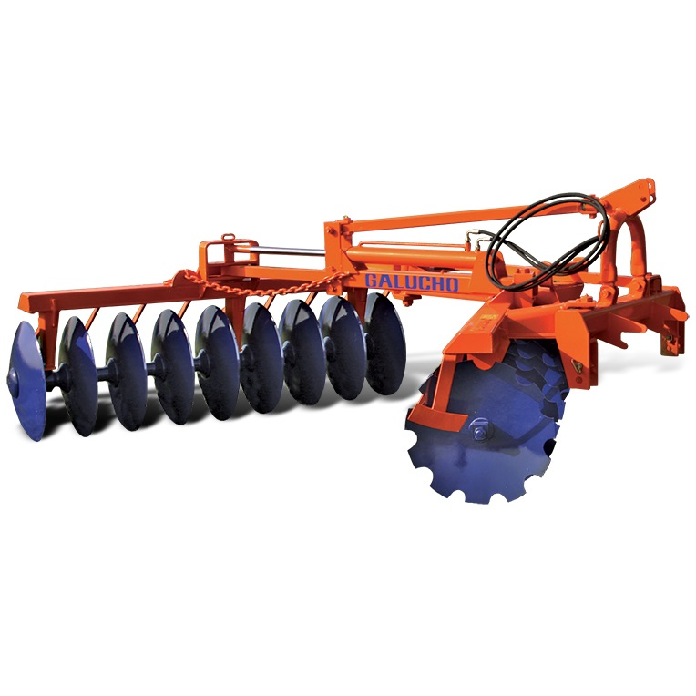
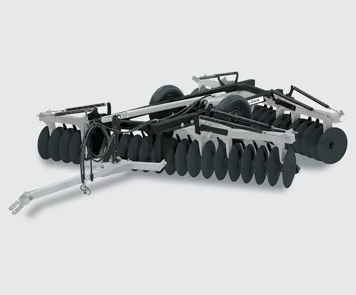
Máquinas e implementos para o preparo do solo
Grades agrícolas: Grades de discos
Disposição dos eixos
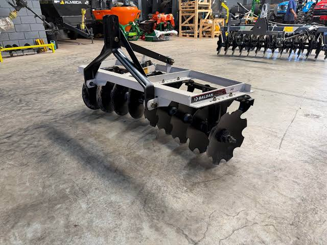
Ação simples
Máquinas e implementos para o preparo do solo
Grades agrícolas: Grades de discos
Disposição dos eixos
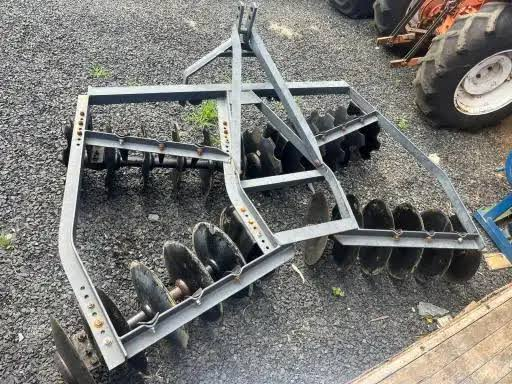
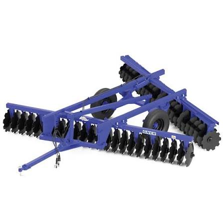
Máquinas e implementos para o preparo do solo
Grades agrícolas: Espaçamento entre discos
| Classe | Distância (cm) | Diâmetro (pol.) | Finalidade |
|---|---|---|---|
| Ultraleve | 18 | 18 | Limpeza de entrelinhas e eliminação de plantas daninhas a pequena profundidade. |
| Leve | 20 | 20 | Nivelamento e destorroamento final em cereais. |
| Leve | 23 | 24 | Nivelamento e destorroamento final em cana-de-açúcar. |
| Média (GAI) | 27 | 28 | Preparo do solo para cereais e reforma de pastagens. |
| Pesada (GAP) | 34 | 32 | Preparo mais profundo, especialmente em cana-de-açúcar e áreas novas. |
| Superpesada (GASP) | 45 | 36 | Preparo profundo em condições de maior dificuldade de penetração e corte de restos vegetais. |
Máquinas e implementos para o preparo do solo
Grades agrícolas: Espaçamento entre discos
| Espaçamento (cm) | Aplicações |
|---|---|
| 18 | Preparo secundário em solo arado com pouco resíduo superficial; Solo extremamente duro. |
| 23 | Operações convencionais de corte de resíduos superficiais; Incorporação de agroquímicos; Incorporação de sementes miúdas. |
| 28 | Trabalho profundo com abundante resíduo superficial; Preparo para a semeadura em solos que se desintegram com facilidade. |
| 33 ou mais | Para grande profundidade de trabalho em condições extremas de solo e resíduos superficiais abundantes; Preparo primário. |
Máquinas e implementos para o preparo do solo
Grades agrícolas: Grades de discos
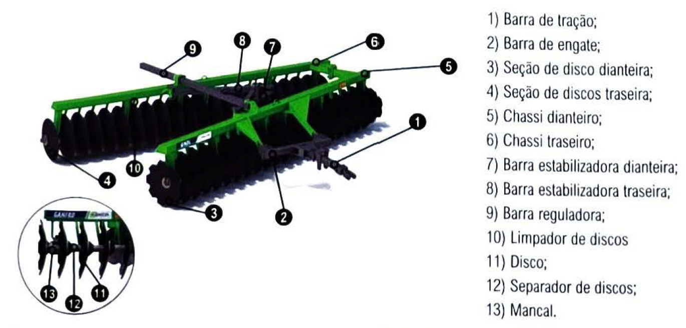
Máquinas e implementos para o preparo do solo
Grades agrícolas: Grades de discos
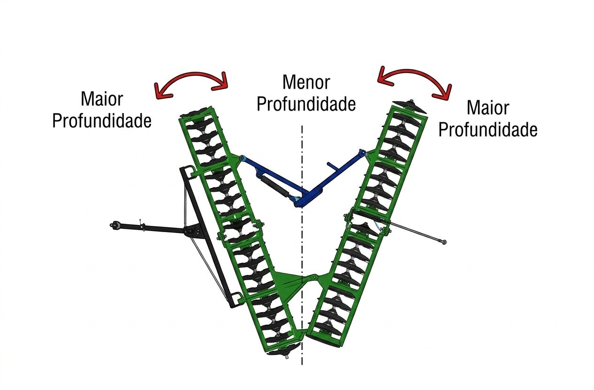
Máquinas e implementos para o preparo do solo
Grades agrícolas: Grades de discos
| Critério | Classificação / Característica |
|---|---|
| Tipo de órgão ativo | Dentes Discos |
| Fonte de potência (tração) | Animal Mecânica |
| Acoplamento à fonte de potência | Arrasto (BT) Semimontado Montado (SHTP) |
| Quanto à ação no solo ou disposição dos eixos | Simples ação Dupla ação Off-set Dupla ação Tandem |
| Quanto à finalidade baseada no espaçamento entre discos e diâmetro de disco | Ultraleve Leve Média Pesada Superpesada |
Máquinas e implementos para o preparo do solo
Escarificadores e subsoladores
São equipamentos que trabalham a superfície e a subsuperfície do solo, respectivamente, para promover o rompimento de camadas compactadas.
Possuem o mesmo princípio de rompimento do solo, por propagação de trincas nas linhas de fratura naturais ou por meio dos agregados, diferentemente de arados e grades, que cortam o solo.
Escarificação: é uma operação de preparo do solo.
Subsolagem: é uma prática conservacionista que visa à remoção de camadas compactadas em subsuperfície.
Máquinas e implementos para o preparo do solo
Escarificadores e subsoladores
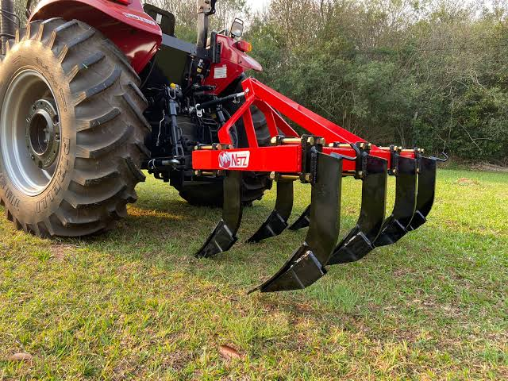
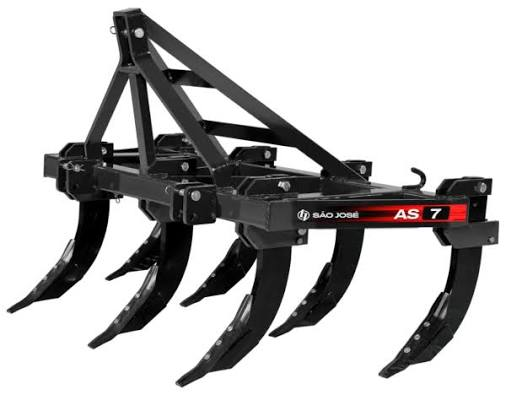
Máquinas e implementos para o preparo do solo
Escarificadores e subsoladores
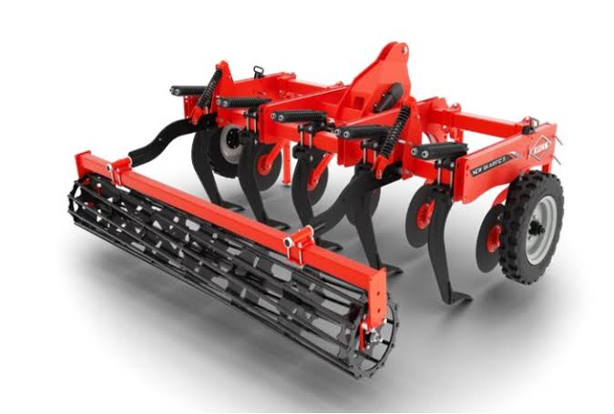
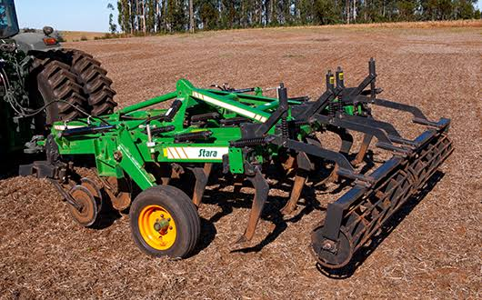
Máquinas e implementos para o preparo do solo
Escarificadores e subsoladores
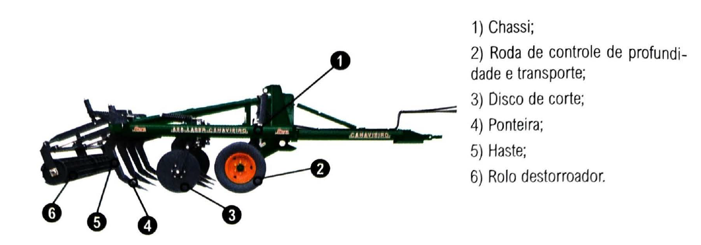
Máquinas e implementos para o preparo do solo
Escarificadores e subsoladores
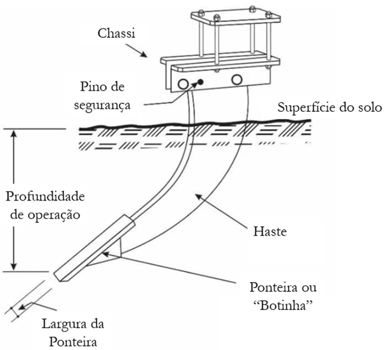
Máquinas e implementos para o preparo do solo
Escarificadores e subsoladores
Tipos de hastes
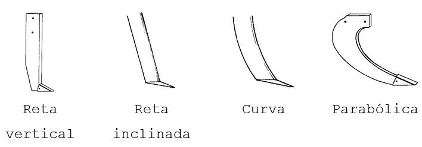
Máquinas e implementos para o preparo do solo
Escarificadores e subsoladores
Molas helicoidais
Sistema de segurança com mola helicoidal que permite que a haste desarme, contorne o obstáculo e rearme sozinha.
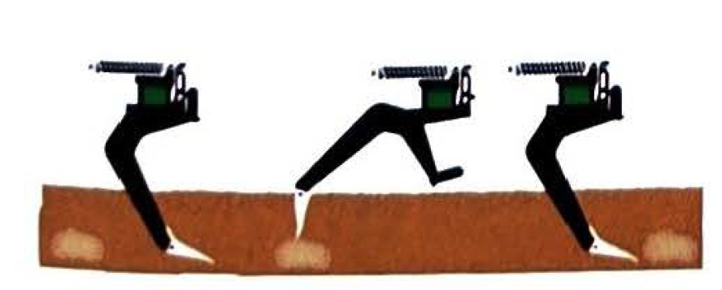
Máquinas e implementos para o preparo do solo
Escarificadores e subsoladores
Molas helicoidais
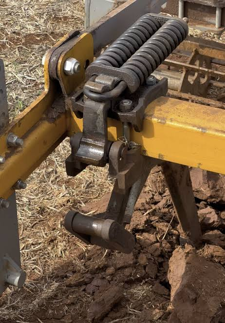
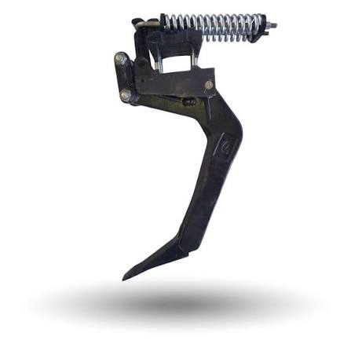
Máquinas e implementos para o preparo do solo
Escarificadores e subsoladores
| Critério | Característica |
|---|---|
| Tipo de órgão ativo (ponteiras) | Sem asas Com asas |
| Fonte de potência (tração) | Animal Mecânica |
| Acoplamento à fonte de potência | Arrasto (BT) Semimontado Montado (SHTP) |
| Quanto à profundidade de trabalho | Escarificação leve (5 a 15 cm) Escarificação pesada (15 a 30 cm) Subsolagem (30 cm ou mais) |
Máquinas e implementos para o preparo do solo
Enxadas rotativas
Promovem a mobilização do solo, na profundidade de até 0,3 m, por meio de múltiplas lâminas posicionadas em um rotor transversal ao sentido de deslocamento.
O rápido giro do rotor permite que uma camada de solo seja cortada e lançada em direção a uma chapa na parte traseira da máquina (placa de impacto).
Máquinas e implementos para o preparo do solo
Enxadas rotativas
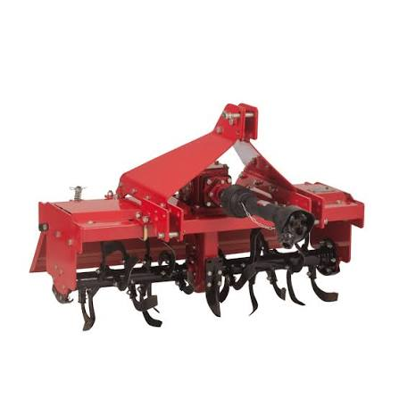
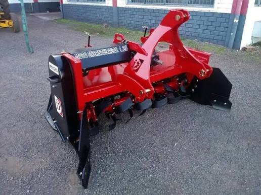
Máquinas e implementos para o preparo do solo
Enxadas rotativas
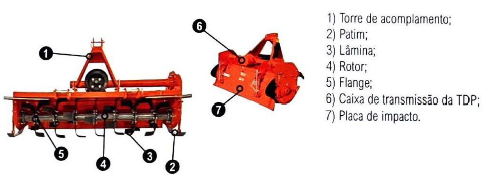
Máquinas e implementos para o preparo do solo
| Operação | Objetivo | Resistência ao cisalhamento Solo |
Resistência ao cisalhamento Torrão |
Consistência do solo | Direção da força resultante | Equipamento |
|---|---|---|---|---|---|---|
| Rompimento | Aumentar a porosidade e romper camadas compactadas | Baixa | Alta ou baixa | Duro ou friável | Para cima | Subsolador |
| Compactação | Aumento de massa da unidade de solo | Alta | Baixa | Friável | Para baixo ou para os lados | Grade de dentes vibratórios ou não |
| Desintegração | Reduzir o tamanho do torrão | Alta | Baixa | Friável | Para baixo | Rolo e enxada rotativa |
| Corte | Reduzir o tamanho do torrão | Baixa | Alta | Plástico | Para baixo | Grade |
| Inversão | Enterrar materiais vegetais e inverter o solo | Alta | Alta ou baixa | Friável ou plástico | — | Arado |
| Mistura | Misturar aditivos ao solo | Baixa | Alta ou baixa | Friável | — | Enxada rotativa ou grade de discos |
Fim!